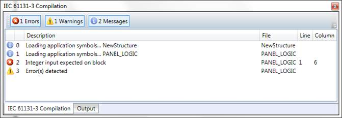

When the “Build” command is executed, the “IEC 61131-3 Compilation” tool is displayed, which contains a list with the build results from compiling the IEC task into an executable.
If the project compilation has been successful, there should be no errors, and the executable is downloaded to the controller.
If any errors occurred the error description is displayed as a hint, so the error can be removed by the user.
Double-clicking on an item opens the source editor, relevant to the item. In the example below, double-clicking on the second line (variable, constant expression or function call expected), will open an editor for the “LADDER1” program, and will position the caret on line 1, column 9 (which is the source of the error).

To show and hide different types of messages, the user can use the “Errors”, “Warnings” and “Messages” buttons respectively.